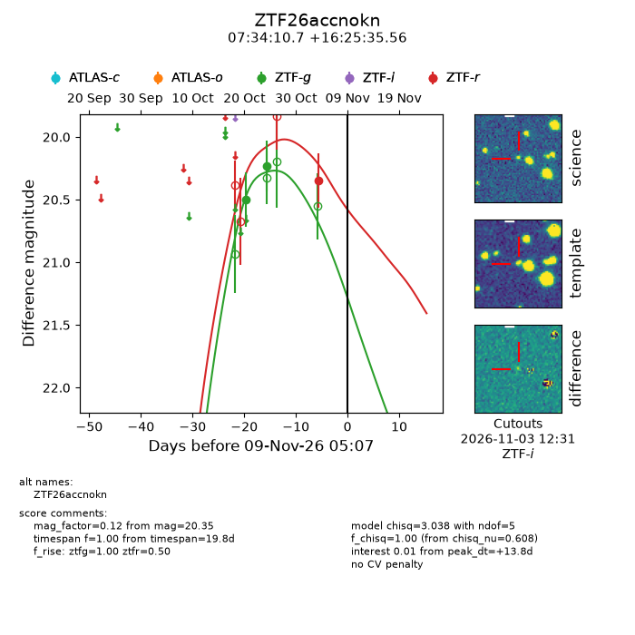
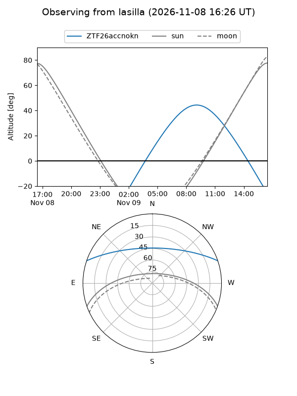
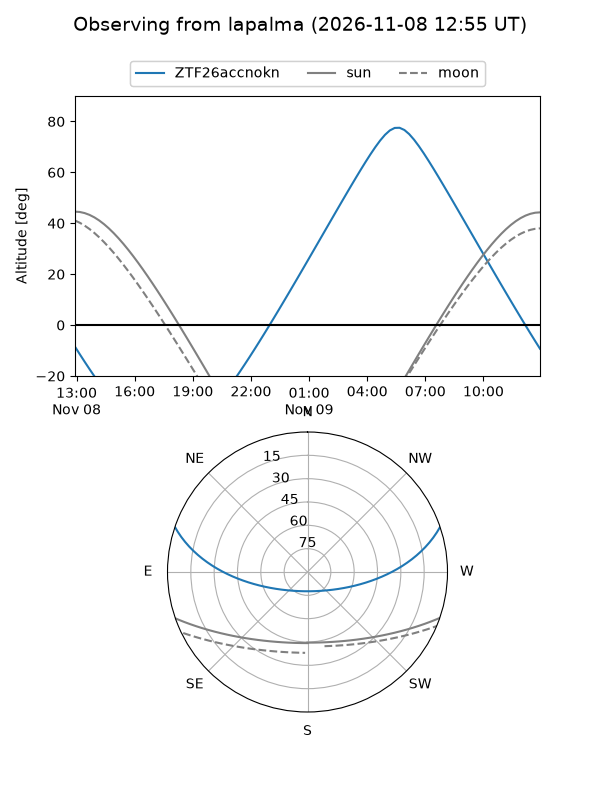
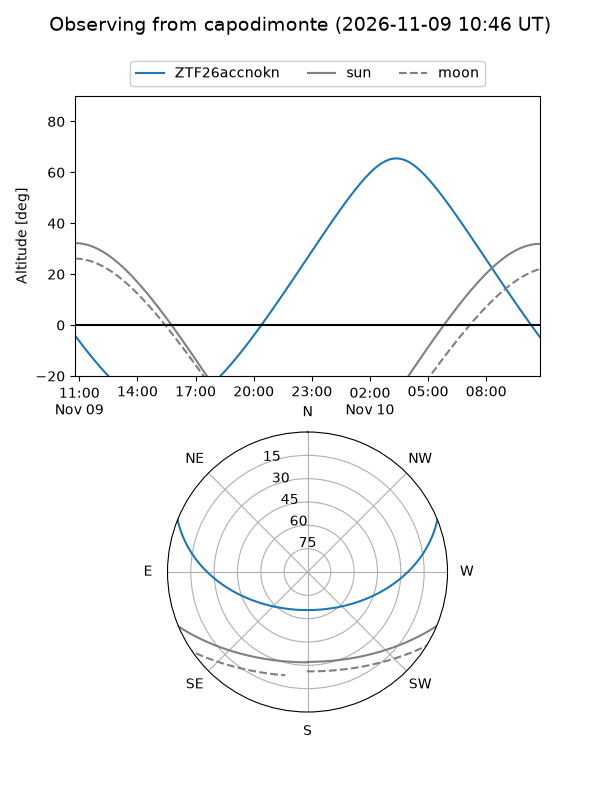
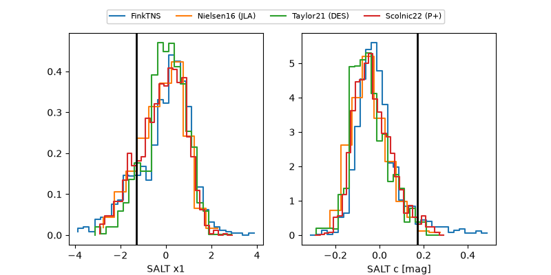

ZTF26accnokn
Target ZTF26accnokn at 2026-11-09 17:09
Aliases and brokers:
FINK-ZTF: ztf.fink-portal.org/ZTF26accnokn
Lasair-ZTF: lasair-ztf.lsst.ac.uk/objects/ZTF26accnokn
ALeRCE-ZTF: alerce.online/object/ZTF26accnokn
Direct TNS query: direct search
alt names
ZTF26accnokn (ztf,fink_ztf)
Coordinates:
equatorial (ra, dec) = 113.5446,+16.42655
equatorial (HMS+DMS) = 07:34:10.71,+16:25:35.56
galactic (l, b) = (202.6736,+16.69186)
Flags:
peak dt: +14.3
Photometry:
last ztfg=20.23, ztfr=20.35
2 ztfg, 1 ztfr detections
Lightcurve

Visibility



Additional plots
